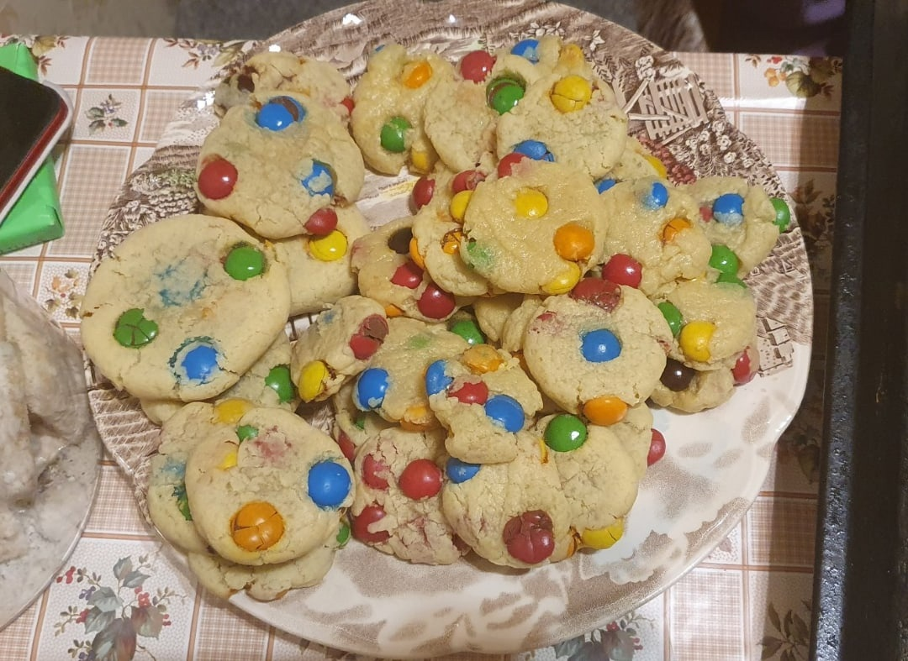

🍪 Печенье M&M's 🍪
11 февраля 2023 15:46
Оценка:
4.8
Если вы хотите удивить своих близких и гостей ярким печеньем, то печенье с M&M's — для вас! Приготовить его очень просто и быстро, но получается оно невероятно красивым и оригинальным.
Вот, что нам понадобится:
- Вода - 150 мл
- Сливочное масло - 120 г
- Яйцо - 1 шт
- Пшеничная мука - 470 г
- Сахар - 1 стакан
- Упаковка M&M's - 180 г
- Ванилин - 3 г
Итак, приступим!
- 60 грамм сливочного масла доведите до кипения и дайте ему покипеть, чтобы выпарилась лишняя влага. Затем снимите масло с огня и добавьте остальные 60 грамм масла. Растопите его и слегка охладите смесь.
- Добавьте к нему весь сахар и начните взбивать на небольшой скорости. Добавьте яйцо и слегка взбейте миксером. Муку просейте и добавьте к ней разрыхлитель и соль.
- Смешайте сухие и жидкие ингредиенты. Добавьте конфеты и хорошо перемешайте. Смазанными растительным маслом руками сформируйте печенье, выложите его на застеленный пергаментной бумагой противень и сверху украсьте конфетами.
- Выпекайте в разогретой до 180 градусов духовке в течение 8-10 минут.
Приятного чаепития!


Оцени рецепт: